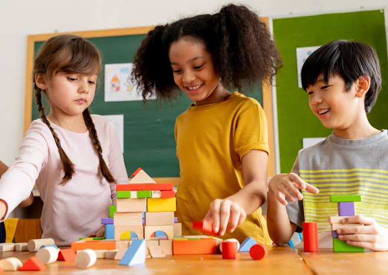
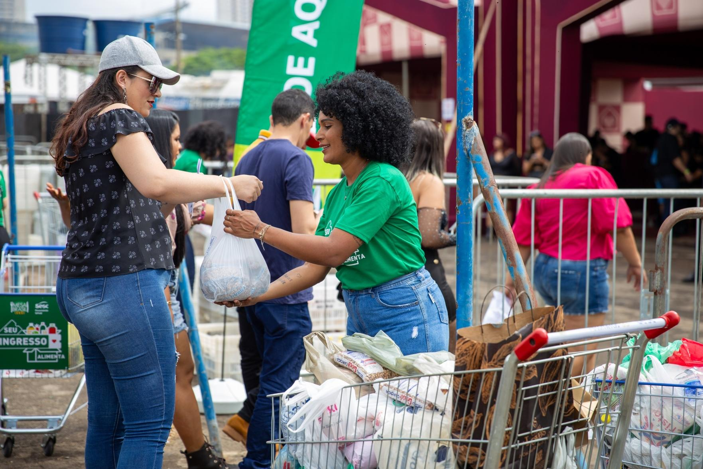

Educação para Todos

Projeto voltado para oferecer apoio educacional, reforço escolar e atividades de aprendizagem.
Como participar
Voluntários podem atuar como professores, monitores ou auxiliares nas atividades.
Conheça algumas das iniciativas desenvolvidas pela ONG Mãos Unidas.

Projeto voltado para oferecer apoio educacional, reforço escolar e atividades de aprendizagem.
Voluntários podem atuar como professores, monitores ou auxiliares nas atividades.

Campanha destinada à arrecadação e distribuição de alimentos para famílias em situação de vulnerabilidade.
Você pode contribuir realizando uma doação ou participando das ações como voluntário.
As doações ajudam a manter nossos projetos e ampliar o número de pessoas atendidas.
Faça parte da nossa equipe e ajude a transformar vidas.
Cadastre-se como voluntário